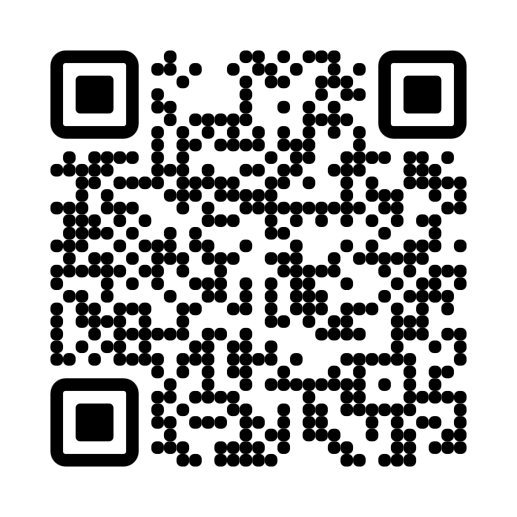
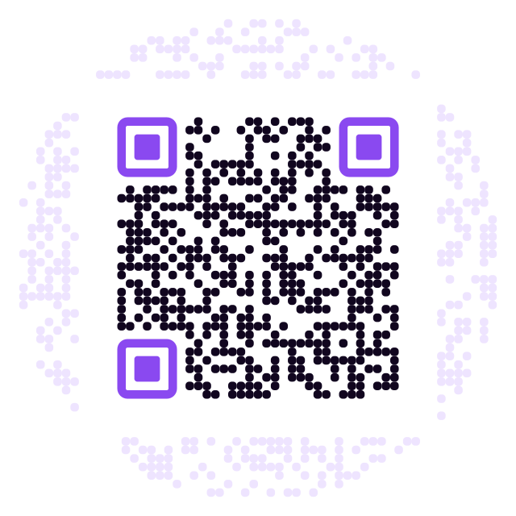
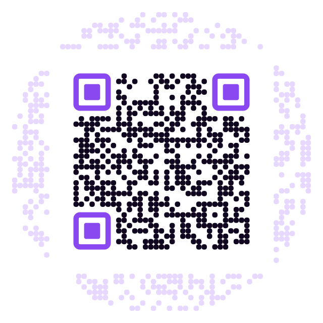
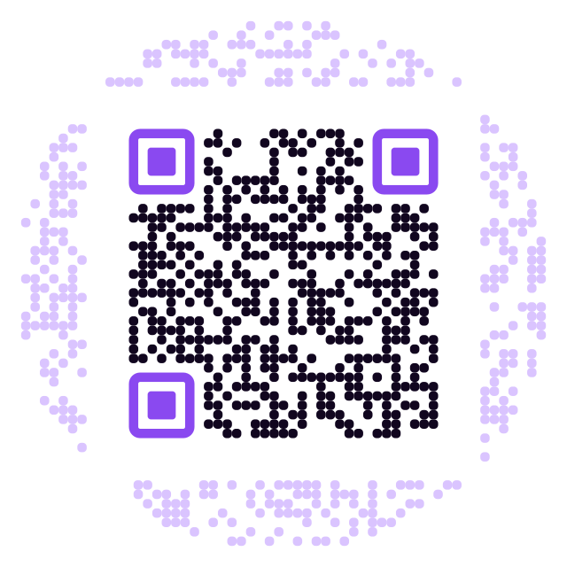

Scan each one with your phone. They all point at the Void's Horizon page, so a working code lands you back on the store links.
The two at the bottom are here on purpose: they look the best and they do not work. Scanning them is the fastest way to see why the pretty ones are a trap.
What a QR actually is. The only question is how much it is styled.

A real square code in the middle, with fake modules filling the ring around it — they carry no data and exist only so the whole disc reads as one round code. This is what the “circular QR” generators do.



Both are standard presets in online QR generators. Both fail, and they fail silently — the code looks perfect and simply never scans, which you would find out after the hoodies arrive.
